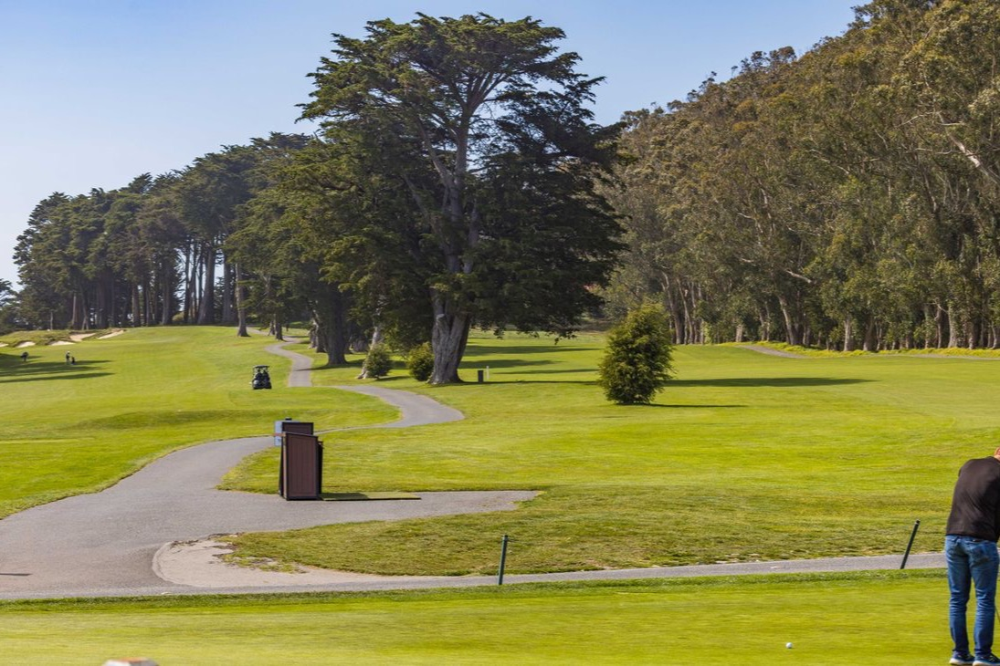
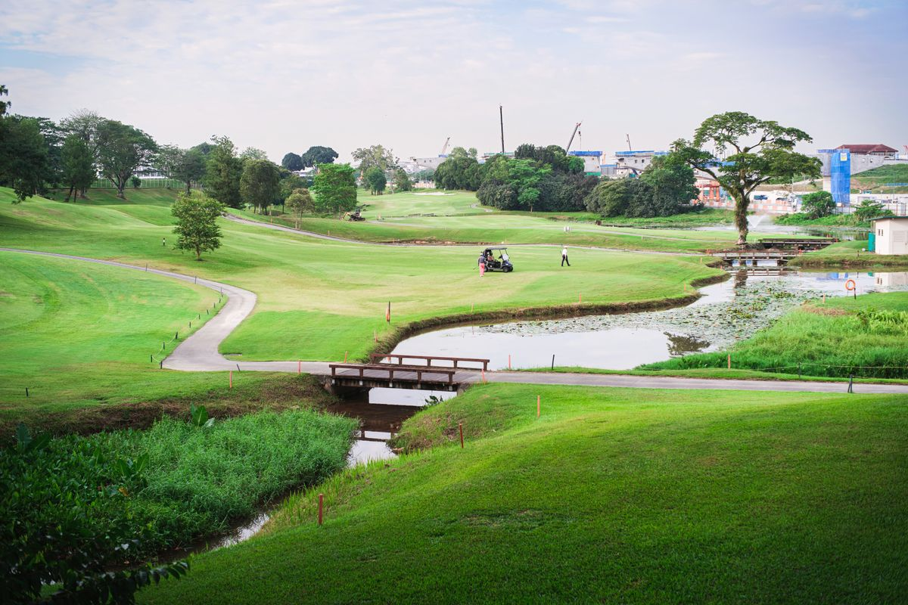
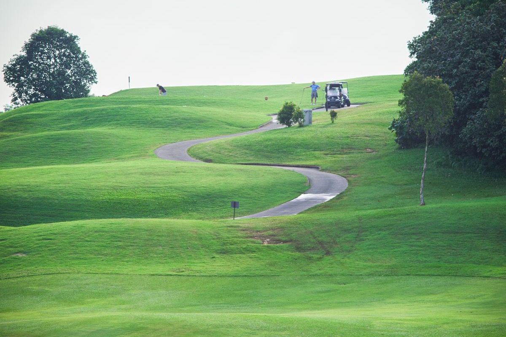
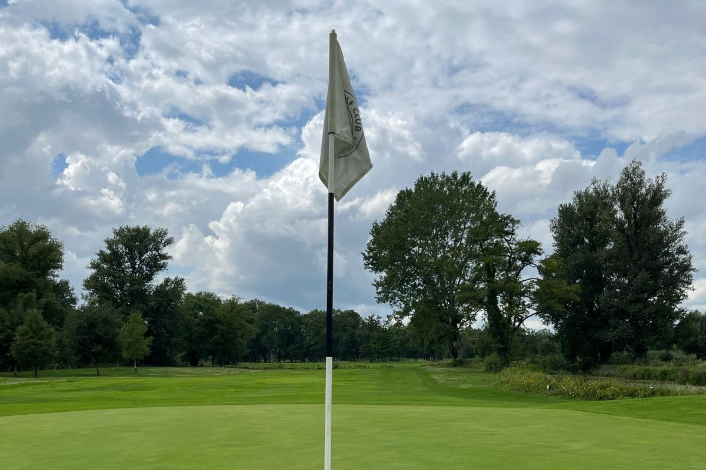

Notre parcours
Le parcours fait 18 trous pour un par de 72.
Il y a des bunkers, des arbres et même des étangs. Attention aux balles perdues !
Il mesure environ 6 200 mètres et s'étend sur 65 hectares. Les 9 premiers trous passent
dans la forêt de pins, alors que les 9 derniers sont plus ouverts et longent les étangs.
Il faut compter environ 4 heures pour faire les 18 trous.
Le parcours est adapté à tous les niveaux : il y a plusieurs zones de départ sur chaque trou,
plus ou moins loin du green. Les débutants peuvent donc jouer sans se décourager.

Trou n°1
Par 4 - 365 m
Un trou tout droit pour bien commencer. Les grands pins de chaque côté demandent quand même un coup de départ précis.

Trou n°5
Par 3 - 145 m
Le green est presque entièrement entouré d'eau ! C'est le trou où l'on perd le plus de balles.

Trou n°12
Par 4 - 380 m
Le fairway tourne vers la gauche au milieu des arbres. Il faut bien choisir où placer sa balle.

Trou n°18
Par 5 - 475 m
Le 18e et dernier trou, le plus beau. Il se termine devant la terrasse du club-house, sous les yeux des spectateurs.
Classement des meilleurs joueurs du club
Chaque année, les joueurs gagnent des points lors des tournois du club.
Voici le classement de la saison 2026.
| Rang |
Joueur |
Index |
Tournois gagnés |
| 1er |
M. Peter Banton |
2,4 |
5 |
| 2e |
Tiger Woods |
4,1 |
3 |
| 3e |
Jack Nicklaus |
5,8 |
2 |
Un grand bravo à M. Peter Banton, champion du club pour la troisième année de suite !
Quand il n'est pas sur le parcours, il enseigne l'info web... et on raconte que
ses swings sont aussi propres que son code.
L'index mesure le niveau d'un joueur : plus il est bas, meilleur est le joueur.
Conseils pour les débutants
Pour votre première fois, nous vous conseillons de commencer par le parcours 9 trous
ou par une initiation avec un moniteur. Vous apprendrez les règles de base et la bonne façon
de tenir le club.
Pas besoin d'acheter du matériel : le club prête des clubs et des balles pendant les initiations.
Prévoyez simplement des chaussures confortables et une tenue adaptée à la météo.